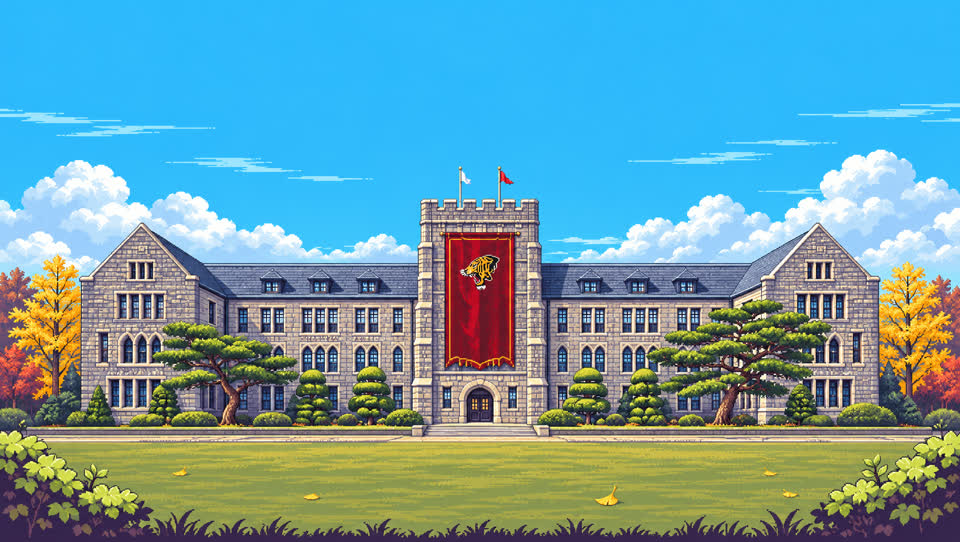
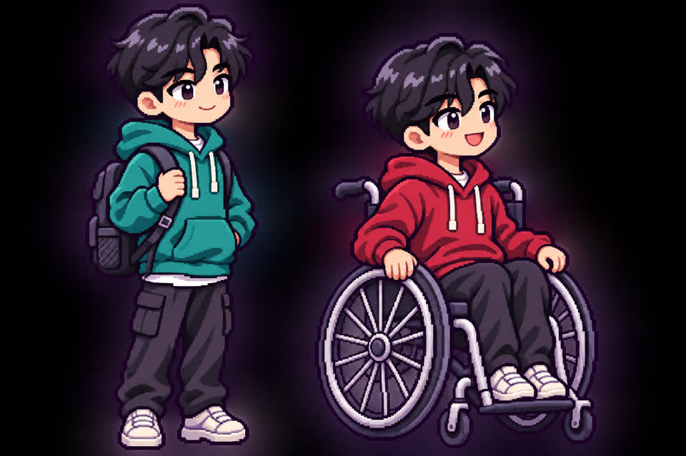
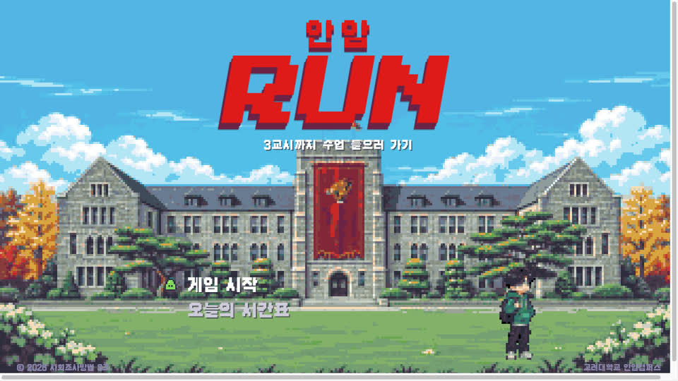
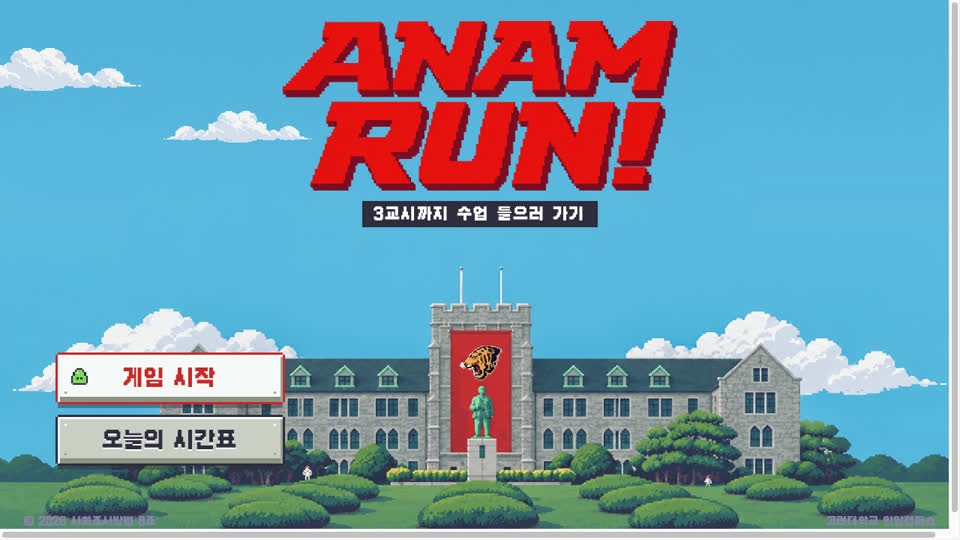
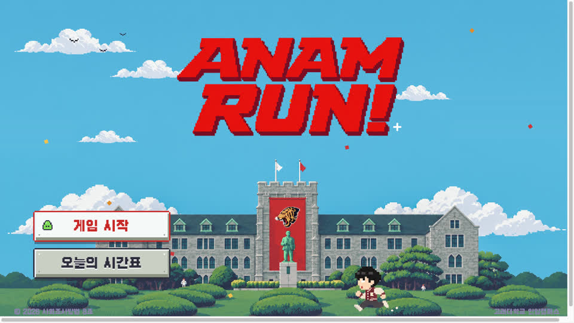
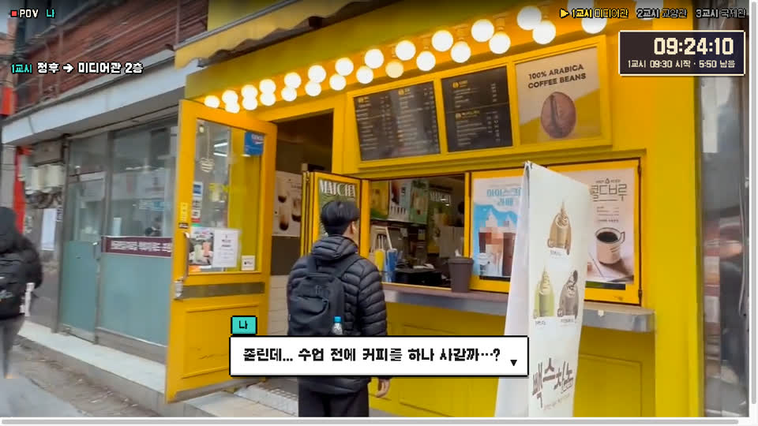
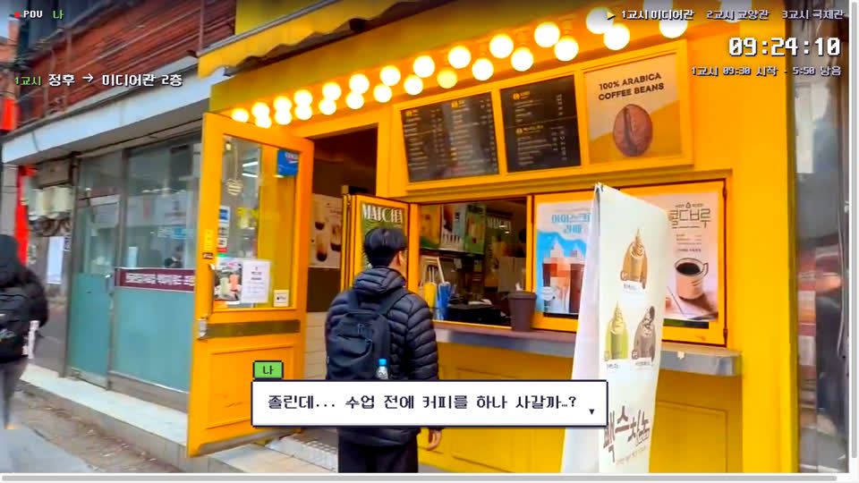

왜 이렇게 만들었나
사회조사방법 8조 · 발표자가 함께 설명하면 좋은 것들
왜 '게임' 연출인가
평범한 퀘스트 → 반전
1부는 아무 설명 없이 "3교시까지 수업 들으러 가기"라는 평범한 등교 퀘스트로 시작한다. 관객은 그냥 길을 고르고, 시간 안에 강의실에 도착한다. 1부가 끝나면 같은 하루를 휠체어 이용 학생의 시점으로 다시 하게 된다는 사실이 공개된다.
처음부터 "장애인 이동권 다큐"라고 밝히면 관객은 결론을 예상하고 본다. 먼저 아무 생각 없이 같은 길을 지나 보게 한 뒤 다시 보여 주면, 1부에서 당연했던 계단·지름길·빠른 엘리베이터가 2부에서 하나씩 사라지는 것이 더 크게 느껴진다.
선택지가 줄어드는 경험
영상만 보여 주면 관객은 구경꾼이 된다. 갈림길마다 관객이 직접 길을 고르게 했다. 1부에서는 어느 길을 골라도 갈 수 있지만, 2부에서 계단 쪽을 고르면 GAME OVER가 된다. "선택지가 줄어든다"는 것을 말로 설명하는 대신 직접 겪게 하려는 장치다.
공정한 비교
두 사람은 같은 출발 시각, 같은 시간표, 같은 강의실로 움직인다. 출발: 1교시 9:21 · 2교시 10:15 · 3교시 11:45. 수업 시작: 9:30 · 10:30 · 12:00. 차이는 오직 길과 이동 방식에서만 나온다. 수업 시작보다 늦게 도착하면 교시 끝 화면에 STAGE LATE가 뜨고, 결과 화면에서는 교시별 이동 시간을 막대로 나란히 비교한다.
시계와 배율의 근거
시계 = 원본 촬영 시간
화면 속 영상은 구간마다 빨리감기된 편집본이다. 그래서 시계는 편집본 재생 시간이 아니라 원본 촬영 파일에서 실제로 흐른 시간을 따라간다. 편집본 영상과 원본 촬영 파일을 0.5초 단위로 장면 대조해서 "편집본 몇 초 = 원본 몇 초" 시간표를 만들었다. 걷기 영상은 이 시간표 그대로(1배), 영상을 빠르게 틀어도 시계는 원본 시간을 따른다.
휠체어: 혼자 미는 속도로 환산
휠체어 촬영은 뒤에서 사람이 밀어 준 상태로 진행했다. 게임 속 학생은 혼자 휠체어를 민다고 설정했기 때문에, 원본 시간에 아래 배율을 곱했다.
| 구간 | 배율 | 이유 |
|---|---|---|
| 평지 | 1.3배 | 밀어 준 속도는 걷는 속도에 가깝고, 혼자 손으로 밀면 평지에서도 느려진다 |
| 오르막·경사로 | 2배 | 오르막에선 손으로 미는 힘이 훨씬 많이 들어 속도가 크게 떨어진다 |
| 국제관 가는 급경사 | 3배 | 혼자서는 중간중간 멈춰 쉬어야 하는 구간으로 봤다 |
| 엘리베이터 대기·탑승 | 1배 (실제 시간) | 미는 속도와 상관없다. 원본에서 실제로 기다린 시간 그대로 |
참고한 자료:
- 휠체어 자가 추진 속도 관련 연구 (PMC3058839)
- 야외 보도에서의 휠체어 추진 부담 (UTMB)
- 경사면 휠체어 추진 근거 정리 (SCIRE)
- 휠체어 이동 속도 관련 논문 (Massey University)
엘리베이터 대기
엘리베이터를 기다리는 구간은 영상 배속을 풀어 천천히 보여 주고, 화면 위쪽에 "엘리베이터 기다리는 중 m:ss"로 실제로 기다린 시간을 표시한다. 기다림이 끝나면 "띵" 소리가 난다. 원본에서 실제로 기다린 시간은 다음과 같다.
| 장면 | 실제 대기·탑승 |
|---|---|
| 1교시 · 미디어관 2층 → 4층 (사람이 많아 두 번 놓침) | 5분 20초 |
| 2교시 출발 · 미디어관 내려가기 | 1분 18초 |
| 3교시 출발 · 교양관 내려가기 | 1분 10초 |
| 1교시 · 미디어관 1층 길 | 51초 |
| 2교시 · 교양관 | 37초 |
엔딩 (예시 경로 기준)
나는 정후 → 엘리베이터 길, 휠체어는 정후 → 2층 입구 길을 골랐을 때. 실제 플레이에선 고른 길에 따라 달라진다.
| 교시 | 나 (비장애) | 휠체어 (혼자 밀기) | 차이 |
|---|---|---|---|
| 1교시 미디어관 | 4:34 · 출석 | 13:26 · 4분 26초 지각 | 2.9배 |
| 2교시 교양관 | 0:52 · 출석 | 7:39 · 출석 | 8.8배 |
| 3교시 국제관 | 3:19 · 출석 | 12:20 · 출석 (2분 40초 전) | 3.7배 |
지각은 1교시 한 번뿐이지만, 휠체어 학생은 매 교시 아슬아슬하게 도착한다. 바로 옆 건물인 교양관도 돌아가야 해서 8.8배가 걸린다.
AI 사용 기록
어디에 어떤 도구를 썼나
| 도구 | 쓴 곳 |
|---|---|
| Claude Code | 사이트 코드 전체(화면 흐름·선택지·연출·전환 효과), 자막 타이핑 효과, 효과음·배경음(브라우저 WebAudio로 직접 합성), 지나가는 사람 얼굴 모자이크(macOS Vision 얼굴·자세 인식 + 프레임 간 추적·보간), 편집본↔원본 장면 대조 시간표, 휠체어 속도 배율 자료 조사 |
| GPT 이미지 생성 | 조원이 만든 게임 그림 에셋: 타이틀 로고, 배경, 인게임 돌 틀·배경, 장소·시계 판, 달리기·휠체어 스프라이트 |
| Higgsfield | 초기 시안 이미지 일부를 생성했지만, 최종본에서는 조원이 만든 에셋으로 교체했다 |
촬영(영상)과 자막 문구, 길 선택 구조는 조원들이 직접 정했다. AI는 그것을 게임 형태로 구현하고 다듬는 데 썼다.
주요 프롬프트 (요청을 짧게 다듬음)
메인 화면 발전 경과
2026-11-22 ~ 11-24. 각 버전은 버전 기록에서 그때 코드를 다시 띄워 캡처했다.












게임 화면 발전 경과
같은 장면(걷기 3번 영상 · 카페 앞 자막)으로 비교. 2026-11-24 하루 동안.








이후 장소·시계 판을 조원의 '인게임 버튼' 그림(하늘색 강철 판)으로 바꾸고, 글씨를 둥근모꼴로, 빨강을 로고 색으로 맞췄다.
한계
- 한 번의 촬영: 하루, 한 사람, 한 번 지나간 기록이다. 날씨·시간대·혼잡도(엘리베이터 대기 인원 등)에 따라 결과는 얼마든지 달라진다.
- 밀어 준 촬영을 환산: 휠체어 촬영은 뒤에서 밀어 준 속도라 혼자 미는 시간은 배율로 추정했다. 실제 휠체어 이용자가 같은 길을 혼자 이동하며 잰 시간이 아니다.
- 경사도 미측정: 평지·오르막·급경사 구분은 영상 장면을 보고 판단했다. 실제 경사도는 재지 않았다.
- 시간으로 다 담을 수 없는 것: 피로, 위험(턱에 걸리는 순간), 문을 열어 달라고 부탁해야 하는 부담, 주변 시선 같은 경험은 시계 숫자로 표현되지 않는다.
- 경로 일부만: 캠퍼스의 모든 길이 아니라 정해진 수업 동선 일부만 촬영했다.
- 편집본 길이 ≠ 실제 시간: 화면 속 영상은 빨리감기된 편집본이라, 영상이 끝나는 데 걸리는 시간과 시계의 시간은 다르다.
- 자동 모자이크: 얼굴 인식으로 자동 처리해서 일부 프레임에서 누락될 수 있다.
조작법·단축키
| 키 | 기능 |
|---|---|
| Space | 영상 재생 / 일시정지 |
| → | 지금 영상 건너뛰기 (다음 화면으로) |
| Backspace | 이전 화면으로 돌아가기 (GAME OVER 화면에선 같은 선택지로) |
| M | 소리(효과음·배경음) 끄기 / 켜기 |
| P | 영상 픽셀 필터 끄기 / 켜기 |
| ↑↓←→ + Enter | 메뉴·선택지에서 커서 이동, 선택 |
- 소리: 브라우저 정책 때문에 화면을 한 번 눌러야 소리가 나온다.
- 튜토리얼: 오른쪽 위 "건너뛰기 ▶▶" 버튼으로 바로 1교시부터 시작할 수 있다. 대화는 클릭이나 Enter/Space로 넘긴다.
- 영상 화면: 오른쪽 아래 재생/건너뛰기 버튼으로도 조작할 수 있다.
- 자막 편집기: edit.html(자막 수정실)에서 자막·선택지 문구를 고칠 수 있다. 온라인에선 바로 저장되지 않고
subs.json파일로 내려받아 전달한다. - 새로고침: 수정이 반영되지 않으면 ⌘+Shift+R (윈도우는 Ctrl+Shift+R).
발표 팁
추천 흐름
- 1부 플레이: 장애 얘기는 꺼내지 않고 "오늘 3교시까지 수업 가 보자"로 시작한다. 갈림길 선택은 관객에게 맡긴다.
- 반전: 1부가 끝나고 휠체어 시점이 공개될 때 잠깐 멈춰서 반응을 본다.
- 2부 플레이: 같은 갈림길에서 관객이 계단 쪽을 고르면 GAME OVER를 그대로 보여 준다. 엘리베이터 대기 화면에서 시계가 흐르는 걸 짚어 준다.
- 교시 끝 비교: 2부 교시 끝 화면의 "아까 나 → 지금" 숫자를 읽어 준다.
- 결과 막대: 교시별 이동 시간 막대로 마무리한다. 2교시(바로 옆 건물인데 8.8배)가 가장 극적이다.
관객 참여
선택지마다 손을 들게 하거나 앞줄에 고르게 하면 "내가 고른 길이 막혔다"는 경험이 더 강해진다. 시간이 부족하면 →로 영상을 건너뛰어도 시계와 기록은 원본 시간 기준으로 계산된다.
질문 대비
- "배율은 어디서 나왔나?" → 문헌을 참고한 추정치이고 실측이 아니라는 점, 엘리베이터는 배율 없이 실제 시간이라는 점을 먼저 말한다. (2번)
- "한 번 찍은 걸로 일반화할 수 있나?" → 할 수 없다. 이 작업은 측정 연구가 아니라 경험을 보여 주는 민족지적 기록에 가깝다. (4번)
- "AI는 어디까지 썼나?" → 촬영·문구·길 구조는 조원이, 구현·에셋 보조·자료 조사에 AI를 썼다. (3번)
- "왜 지각이 한 번뿐인가?" → 결과를 과장하지 않으려고 원본 시간을 그대로 썼다. 지각하지 않아도 매번 여유가 거의 없다는 게 핵심이다.